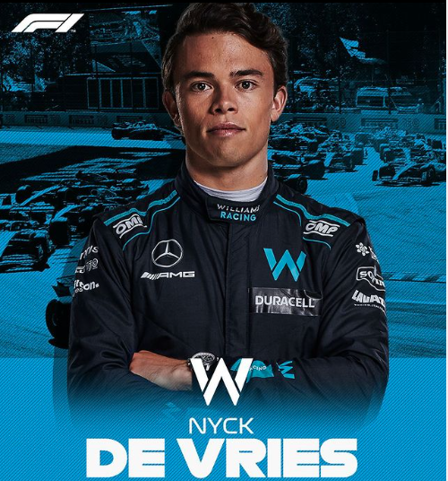

Nyck De Vries
Biographie
Nyck de Vries, né le 6 février 1995 à Sneek, aux Pays-Bas,
est un pilote automobile néerlandais qui participe depuis 2020 au championnat du monde de Formule E
l’écurie allemande Mercedes-Benz EQ Formula E Team.
La formula 1
Ses débuts
Son apogée
En septembre 2019,
Nyck de Vries est officialisé comme pilote de Mercedes EQ en Formule E.
Il fait équipe avec Stoffel Vandoorne.
Nyck de Vries termine sa première saison à la 11e place du classement des pilotes avec 60 points
Aujourd'hui
2022 : troisième saison en Formule E chez Mercedes
et pilote de réserve chez Mercedes en Formule 1
Il a réalisé dimanche 11 septembre 2022 sa première course en F1 au sein de l'écurie Mercedes
Réseaux sociaux